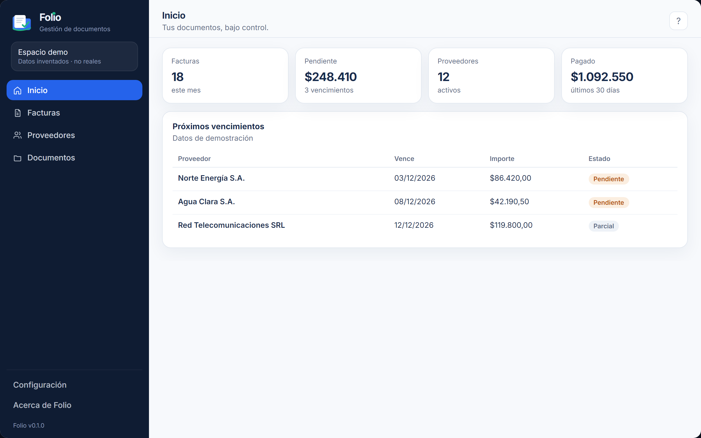
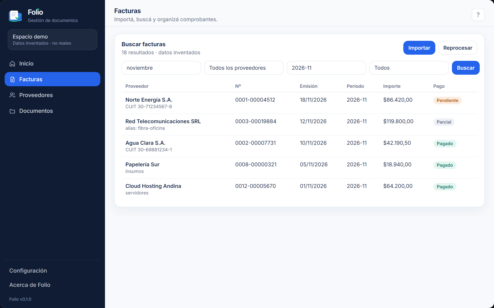
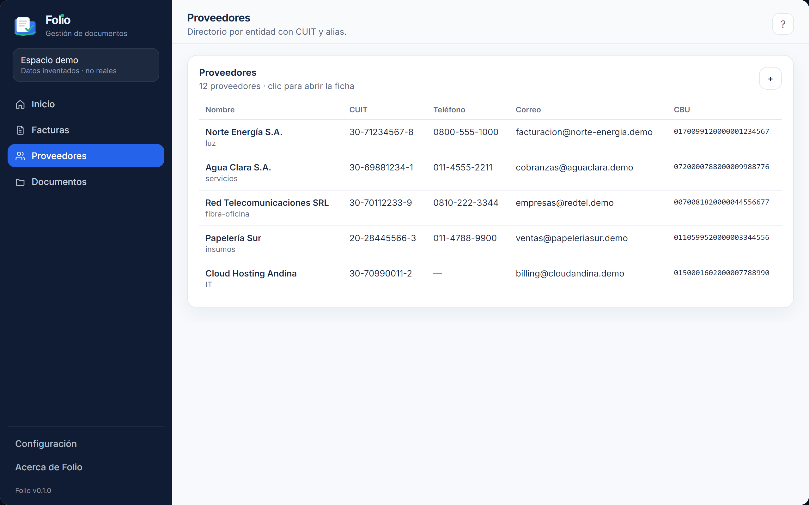

Privacidad
Tus documentos permanecen en tu computadora.
Organizá facturas, pagos y documentos en un solo lugar. Sin cuentas, sin suscripciones y sin subir tus archivos a la nube.
Tus documentos permanecen en tu computadora.
Sin suscripciones ni funciones básicas bloqueadas.
El uso habitual no depende de Internet.
Código abierto y desarrollo público.
Importá PDF o imágenes, buscá y organizá comprobantes en tu PC.
Guardá CUIT, alias, contacto y CBU asociados a cada espacio.
Controlá pendientes, parciales y fechas de pago.
Separá uso personal y empresas sin mezclar información.
Creá y restaurá copias ZIP de tu archivo.
Lectura de QR ARCA/AFIP, texto PDF y OCR local para completar datos.
Capturas de demostración con datos inventados.



Folio está diseñado para funcionar de forma local. Los documentos que importás y los datos que registrás se almacenan en tu dispositivo.
No pedimos cuenta, no incorporamos telemetría obligatoria y no mostramos publicidad. Algunas acciones opcionales (abrir GitHub, descargas o Mercado Pago) usan Internet porque abren enlaces externos.
Antes del release 1.0 estamos reforzando pruebas de permisos, backups y dependencias. No afirmamos más de lo que podemos demostrar hoy.
Versión actual: 0.1.1 (MVP). Instalador NSIS para Windows 10/11 x64, modo usuario actual.
Aviso de Windows (SmartScreen): el instalador 0.1.1 no está firmado. Es normal ver “Windows protegió su PC”. No indica virus: indica software nuevo sin certificado de firma. En el aviso elegí Más información → Ejecutar de todas formas. Antes, verificá el SHA-256 de arriba.
Porque Folio todavía no tiene firma de código (tiene costo y se evalúa para 1.0). Descargá solo desde GitHub Releases, verificá el hash y usá “Más información → Ejecutar de todas formas”.
Sí. Folio es gratuito y seguirá siendo gratuito. El apoyo por Mercado Pago es voluntario.
No. No hay registro ni inicio de sesión.
No. Folio guarda copias y metadatos en tu computadora para el uso habitual.
En el directorio de datos de la aplicación en Windows (`%APPDATA%/com.folio.app`).
Sí. Folio permite crear y restaurar copias ZIP locales. Conservá tus respaldos en un lugar seguro.
Usá GitHub Issues o escribinos a folioapp.dev@gmail.com. No adjuntes facturas ni bases de datos.
Si te resulta útil, podés colaborar de forma voluntaria para sostener el desarrollo. No necesitás donar para usar Folio.